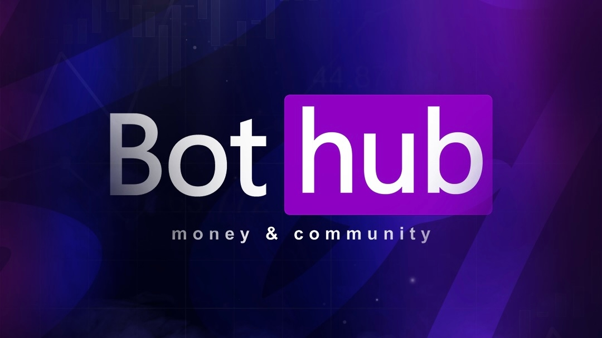

Bothub

Начинаем обзор инструментов для видеогенерации с платформы BotHub — удобного агрегатора нейросетей, где не нужны VPN и зарубежные карты. Интерфейс простой и понятный: прямо над строкой промпта расположены Runway и Veo. Сегодня смотрим на Veo 3.1 от Google — внутри платформы можно гибко настроить длину ролика (от 5 до 8 секунд) и разрешение.
Киллер-фича модели — отличное понимание русского языка: никаких переводчиков и сложных английских конструкций, пишите как есть. Veo — это ответ Google на Sora от OpenAI, обученный на огромном массиве YouTube-видео. Поэтому нейросеть отлично понимает физику объектов и кинематографические приемы, выдавая плавную и качественную картинку.